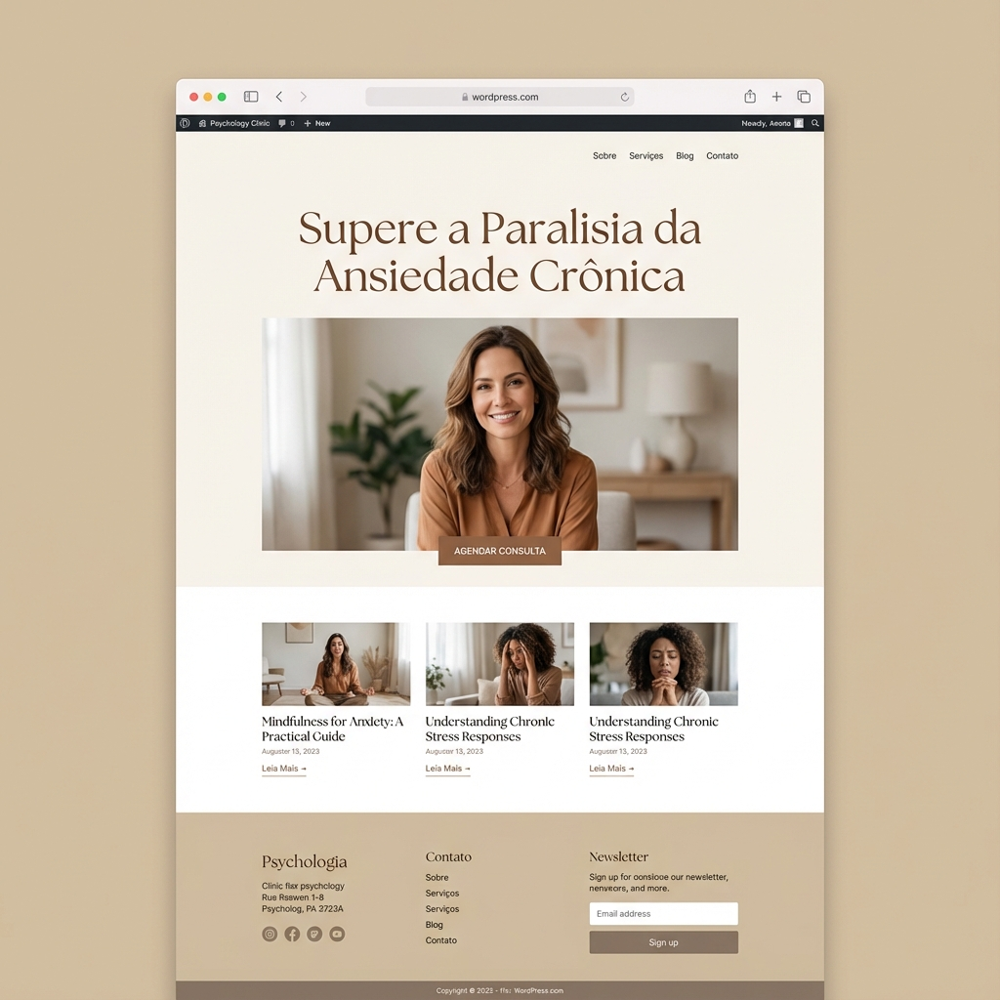

✨ Características Premium
🎨 Design Profissional
Layout clean e moderno com paleta de cores verde elegante, ideal para psicólogos clínicos.
📝 Blog Integrado
Custom Post Type "Artigos" com taxonomia personalizada para categorias de conteúdo.
📱 100% Responsivo
Funciona perfeitamente em desktop, tablet e mobile com design adaptativo.
⚙️ Customizer Integrado
Configure WhatsApp, email, CRP e endereço direto no WordPress Customizer.
🔄 Auto-Update GitHub
Sistema de atualização automática integrado com GitHub Releases.
🔒 Seguro & Otimizado
Código sanitizado, escapado e seguindo WordPress Coding Standards.
📸 Preview do Tema

Landing page profissional com seções Hero,
Sobre, Especialidades e Blog
🚀 Instalação Rápida
Método 1: Via Admin do WordPress (Recomendado)
- Baixe o tema: Download ZIP
- No WordPress, vá em Aparência → Temas → Adicionar Novo
- Clique em Enviar Tema
- Escolha o arquivo ZIP baixado
- Clique em Instalar Agora e depois Ativar
Método 2: Via FTP
- Extraia o arquivo ZIP
- Faça upload da pasta
drpires-theme para /wp-content/themes/
- Ative o tema em Aparência → Temas
⚙️ Configuração
1. Configurar Informações de Contato
Vá em Aparência → Personalizar → Informações de Contato e configure:
- Número do WhatsApp
- E-mail
- Número do CRP
- Endereço
2. Criar Artigos do Blog
Vá em Artigos → Adicionar Novo para criar posts do blog.
3. Configurar Menus
Em Aparência → Menus, crie menus para Primary e Footer.
📁 Estrutura de Arquivos
drpires-theme/
├── style.css # Estilos principais + header do tema
├── functions.php # Funções e configurações
├── header.php # Cabeçalho do site
├── footer.php # Rodapé do site
├── front-page.php # Template da landing page
├── index.php # Loop principal (blog)
├── single.php # Template de artigo individual
├── page.php # Template de páginas
├── screenshot.png # Preview do tema (1200x900)
├── updater.php # Sistema de auto-update GitHub
└── README.md # Documentação completa
🎯 Custom Post Types
Artigos
- Slug: artigos
- Taxonomia: categoria_artigo
- Suporta: title, editor, excerpt, thumbnail
- Ícone: dashicons-welcome-learn-more
🎨 Paleta de Cores
📄 Licença
MIT License - Livre para uso pessoal e comercial